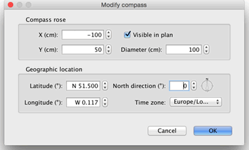

| Editing compass and geographic location | |||
Every new home displays a compass rose at the top left of its plan. As other objects in the plan, it may be moved with a drag and drop operation or the keyboard arrows after selecting it. When the compass rose is the only object selected in the plan, you may resize it or change the direction of the North with its indicators.
|

|
When the mouse pointer is upon one of these indicators, it changes to indicate you can drag and drop that point. The compass rose and the geographic location of your home may also be edited thanks to their pane, displayed wtih a double-click on the compass rose in the home plan, or by choosing Plan > Modify compass... out of the menu.  In the compass pane, you may change the location, the diameter, the North direction of the compass rose and set whether it should be displayed in the plan or not. You may also choose the lattitude and the longitude of the geographic location of the home and the time zone of its region. |
|